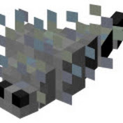

SilverFishTV

Имя:Илья
Никнеймы:SilverFishTV,Tuesday4k,Kasia Makaren
Пол:Мужской
Возраст:От 12 до 99 лет
Дата рождения:Скрывает
Знаком с:Никита Channel и Riv056
Появляется в: Видео Никиты и на Канал кейна
Любимые увлечения:Игра в несколько игр, странствия по гугл картам,сайт растишки,перерисование мужских скинов в женские и наоборот, иронизировать.
Статус:Активен
Никнеймы:SilverFishTV,Tuesday4k,Kasia Makaren
Пол:Мужской
Возраст:От 12 до 99 лет
Дата рождения:Скрывает
Знаком с:Никита Channel и Riv056
Появляется в: Видео Никиты и на Канал кейна
Любимые увлечения:Игра в несколько игр, странствия по гугл картам,сайт растишки,перерисование мужских скинов в женские и наоборот, иронизировать.
Статус:Активен
Основная информация
SilverFishTV это один из близких друзей Никиты. Он был известен за создание нескольких карт для Кейна откуда и получил свою популярность. Однако самым популярным видео было "Якко мир, ошибки в версии 2003 против 2014" набравшее более 400 000 просмотров.Также илья разработал свою игру Olga Behind You. Она однако же из-за своих проблем популярности не сыскала.
На данный момент никто знает чем он занят.
Краткие факты
- Канал SilverFishTV был создан 26 октября 2019 года
(на тот момент канал никиты существовал уже 1410 дней) - Ни в одном из роликов нет озвучки или голоса
- Согласно видеороликам по биатлону у ильи есть мать(очевидно)
- На момент написания этой статьи на его канале находится 37 видео и 1650 подписчиков.
- В среднем его ролики набирают 50 просмотров
- Предположительно его любимая песня это невозможное возможно